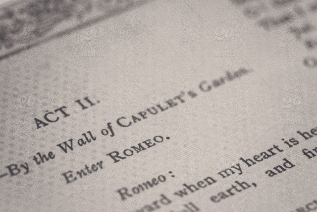

William Shakespeare lived in a highly authoritarian society. Aristocrats had the most power and ruled over the common people. In this hierarchy men were seen as superior to women. Young girls were governed by their fathers and matured to be governed by their husbands. Shakespeare problematized this hierarchy by prominently displaying it in his plays. In Romeo and Juliet, The Merchant of Venice, and Hamlet, Shakespeare presents strong female characters who challenge the social dogma of their societies and prove women are far more capable of thinking for themselves than their male counterparts believed.
This aristocratic hierarchy and sexism existed in London long before Shakespeare’s arrival in the late 1580s (Radical Shakespeare 2). Though young boys in Tudor England were taught to be “active citizens” and were encouraged to speak often about taxes, laws, and foreign affairs, girls were expected to stay home and focus on more menial tasks. (RS 10). The “quiet submissiveness of women, as natural inferiors of men, to husbands and male heads of the household” (RS 12) was the customary norm. The silence of women aided to the male dominated society. Not only were women governed by men in their home lives, but they also had to adhere to rules and standards set by men in their communities. Doctor Chris Fitter states that the “National Government was dependent not just on county administration but on parish self-government, which operated through regular rotation of a large number of local offices among a community’s menfolk” (RS 10-11). The idea of men being superior to women continued to exist throughout William Shakespeare’s life and for many years after.
The historical context that surrounds Romeo and Juliet is essential to understand when examining its plot and presentation of female characters. Even though the play takes place in Italy in the city of Verona, the events are reminiscent of those taking place in London, England at the time. It is clear that this was a conscious choice made by Shakespeare in order to problematize the events taking place in his own city of London. Embedded in this play are the issues of “London between 1594-96—the escalating inter-class youth violence, the dearth of 1594-97, and the sensational London riots of 1595” (RS 145). While these events mostly pertain to issues of class structure, they display how women were oppressed. Women were underrepresented in issues of class behavior. The riots and other forms of violence taking place at this time can be described as between “apprentices and gentlemen” (RS 146). One notable riot that occurred during this time happened “on June 12, 1595 when in response to soaring food prices, a group of apprentices at Billingsgate compelled the sale of fish at the correct price, established by the Lord Mayor” (RS 148).
Food riots such as this one were not an unusual occurrence. Another riot happened just a few days later by another group of apprentices in Southwark over the price of butter: “[They] forced the sale of butter at 3d a pound rather than the 5d that the butter women were demanding” (RS 148). Even though the “butter rioters” did not commit any crime, they were “whipped, pilloried, and imprisoned” (RS 148). While these events definitely affected women they lived in fear of receiving harsh punishment for speaking out and expressing their opinions.
Juliet demonstrates a sense of imprisonment which was a reality for women in London during this time period. She is constrained by her environment and by her parents. One of the most prominent examples of this is how most of her scenes take place inside of her own home. In contrast to this, Romeo is often seen roaming the streets with his friends. Juliet only leaves the house in two instances. The first is in act four, scene one when she goes to speak to Friar Lawrence. In order to leave the house, Juliet tells her Nurse she is going to confess her sins and ask for forgiveness. In reality, she is going to ask for advice. This act shows how Juliet’s parents impose imprisonment on her. She needs their permission to leave. The second time Juliet leaves her house is when she is placed in her family’s tomb after she is believed to be dead.
Juliet’s imprisonment can also be seen in how her parents control who she can and cannot associate with. The other characters of the play seem to exist outside of Juliet’s world and only enter with the permission of her parents. Her father chose who was invited to the feast at the Capulet estate. Even though Capulet says “But Montague is bound as well as I,/In penalty alike, and ‘tis not hard, I think,/For men so old as we to keep the peace” (1.2.1-4) the Montagues weren’t invited because he did not want Juliet associating with them. He agrees to be cordial with them but Romeo is definitely not the man Capulet sees his daughter marrying. In this way Juliet’s parents manipulate her surroundings and choose who she interacts with.
Another significant aspect of Juliet’s relationship with her father is that it demonstrates how women were seen as less than men in society. Not only does he dictate who she associates with, but he also decides who she will marry. Capulet intends to use Juliet as a bargaining chip. He wants her to marry Paris so their family will be in good standing with the prince. Capulet, Paris, and Lady Capulet make arrangements for the wedding without Juliet’s knowledge. It is inconceivable to Capulet that Juliet would ever think to disobey him. He tells Paris, “I will make a desperate tender/Of my child’s love. I think she will be ruled/In all aspects by me” (3.5.13-15). At this point in time it was unheard of for a child to disobey their parents. When she expresses to her father that she does not want to marry Paris Capulet says, “Hang thee, young baggage, disobedient wretch!/ I tell thee what: get thee to church o’Thursday,/Or never after look me in the face” (3.5.165-168). Not only were women seen as lower in status when compared to men but children were seen as lower in status when compared to their parents. Children were responsible for most of the daily chores and even the children of wealthy families often went to work as servants (Isaac). For Juliet who is not only a child but also a woman to disobey her father would place shame upon her family. This hierarchy is also displayed through Juliet’s stage directions. She often kneels when speaking to her father. She says, “Good father I beseech you on my knees,/Hear me with patience but to speak a word” (3.5.164-165). This physically shows that Juliet and her father are not on the same level. She is desperate for her father to listen to her. Later in the play, Juliet kneels again to ask for her father’s forgiveness. She says, “Pardon, I beseech you./Henceforward I am ever ruled by you” (4.2.23-24). When Juliet recognizes her father’s place of power and apologizes for speaking out, Shakespeare problematizes this aspect of society. He shows that Juliet should not be at fault for wanting to govern her own life.
Despite all of this, Shakespeare presents Juliet as a woman who is respectful of her superiors but also has her own opinions and is capable of making her own decisions. When she is first presented with the idea of marrying Paris she tells her mother, “It is an honor that I dream not of” (1.3.71). She speaks with dignity and grace. Even though her parents treat her as a child, Juliet shows she is quite mature through her language. She also questions Romeo’s love for her and says, “Dost thou love me? I know thou wilt say ‘Ay.’/And I will take thy word. Yet if thou swear’st/Thou mayst prove false” (2.2. 95-97). She questions him because she wants to make sure his love is pure. She knows there is still a possibility that he is lying about his intentions. This shows how even though Juliet is young, she is capable of thinking rationally. Her relationship with Romeo is seen as the ultimate act of defiance. This shows how she is capable of making her own decisions. Juliet also makes the decision to commit suicide. She says, “O, happy dagger,/This is thy sheath. There rust, and let me die” (5.3.174-175). This is the one aspect of her life she is able to control. These examples show how she is desperate to break away from the constraints her parents have put in place. Therefore, she challenges the ideals of her time period.
William Shakespeare also presents independent female characters in the play The Merchant of Venice. Through Portia he again proves that women are intelligent individuals. Like Juliet, Portia represents imprisonment. The different scenes of the play take place either in Venice or at Portia’s estate of Belmont. When describing the estate Bassanio states, “For the four winds blow in from every coast” (1.1.175). This articulates that Belmont is surrounded by water. It is an island that exists as separate from the business affairs and crowding of the city. Belmont is quite difficult to get to. This explains why Portia’s suitors are wealthy and why Bassanio has to borrow money from Antonio in order to make it there. Portia is only able to associate with people who are wealthy enough and willing to make the journey to Belmont. She only interacts with her lady in waiting Nerissa, her potential suitors, and later in the play friends of her husband Bassanio. In this way, Portia is imprisoned by her environment.
Similar to Juliet, Portia is governed by her father and he dictates who she associates with. Even though he is deceased, it is expressed in his will that Portia may only marry the man who chooses correctly between the three chests made of gold, silver, or lead. She is expected to honor his request. Portia recognizes she is trapped and states, “I may neither choose who I would nor refuse who/I dislike” (1.2.23-24). Her marriage is arranged based on the results of a game. She has no control over who is able to make the journey to Belmont and be a potential suitor. Once a suitor successfully chooses the correct chest, Portia is forced to succumb to the traditional practices of her time period. However, she is very aware that patriarchy is not favorable towards women. After she is betrothed to Bassanio she relinquishes her role as “lord” to him. She states, “This house, these servants, and this same myself/ Are yours, my lord’s” (3.2.174-175). Even though she has successfully taken care of her house and her servants she is forced to give these things up. She says, “I give them with this ring” (3.2.175). This moment is significant because not only is she giving up her possessions, but she is giving up herself to be ruled by a man. Through her language she demonstrates she is aware of the shift in power that is about to take place. This proves she is an intelligent women capable of thinking for herself.
Although Portia is imprisoned, Shakespeare presents her as a powerful and independent woman. Portia challenges the constraints of her time is by disguising herself as a man. She does so in order to save her husband’s beloved friend Antonio. At this time sexist laws prevented women from having a professional presence. Portia conceives of the plan herself and tells Nerissa, “I have work in hand/ That you know yet not of. We’ll see our husbands/Before they think of us” (3.4.59-61). This shows that Portia is clever and capable of solving problems. She goes on to successfully convince a courtroom full of men that she is a well educated lawyer. She enters the room with confidence saying, “Of a strange nature is the suit you follow,/Yet in such rule that the Venetian law/Cannot impugn you as you do proceed” (4.1.180-182). Immediately she establishes herself as a person of high intelligence. As the scene progresses, it seems as if Shylock will get the pound of flesh from Antonio that he desires. Portia is quick to intervene and makes the distinction, “This bond doth give thee here no jot of blood” (4.1.319). By doing this, she saves Antonio’s life. She accomplishes what Bassanio nor any other man was able to do. In this instance William Shakespeare’s presentation of Portia shows that women are far more intelligent than men of his time believed.
Hamlet is another play in which Shakespeare presents a woman who is very intelligent and aware of the ways she is unfairly treated. Much like Juliet and Portia, Ophelia represents a woman who is abused by the males in her life. Not only is she abused by her father, but she is also abused by her brother, and Hamlet. In act one scene three Ophelia is having a conversation with her brother, Laertes. He makes the argument that there is no way Hamlet can marry her because he has to make decisions based on the country rather than his own personal feelings. Laertes tells her, “The chariest maid is prodigal enough/If she unmask her beauty to the moon” (1.3.40-41). He says that all women are promiscuous and even the purest maidens will eventually undress and become immoral. Ophelia does not accept this sexist idea. She tells her brother it is unfair of him to think this way because he does not practice what he preaches. She states, “the primrose path of dalliance treads/And recks not his own trade” (1.3.54-55). Ophelia knows that her brother does not think very highly of women. She dismisses his foolish thoughts. In this instance Shakespeare shows Ophelia as a woman who challenges a man and is not afraid to speak her mind.
Ophelia’s relationship with her father is also one of great complication. Just moments after Ophelia is abused by Laertes, her father steps in to voice his opinions about her relations with Hamlet. Polonius says, “I do know,/When the blood burns, how prodigal the soul/Lends the tongue vows” (1.3.124-126). The argument Polonius makes is that feelings change and young men will say anything in order to get what they want. He does not want Ophelia to believe that Hamlet loves her. Polonius orders his daughter: “I would not, in plain terms, from this time forth/Have you so slander any moment leisure/As to give words or talk with the Lord Hamlet” (1.3.141-143). Ophelia does not contradict her father. She says “I shall obey my lord” (1.4.145). Ophelia is governed by her father and is expected to do as he says. She is more willing to listen to her father than she is her brother. This shows the patriarchal order of her society.
Hamlet also emotionally abuses Ophelia. He manipulates her emotions. When Ophelia expresses the love he made her feel Hamlet replies, “You should not have believed me, for virtue/cannot so (inoculate) our old stock but we shall/relish of it. I loved you not” (3.1.127-129). He denies that he ever loved her. Hamlet then orders Ophelia to go to a nunnery (3.1.131). Ophelia thought Hamlet was the one man in her life who would treat her with respect and love. When this idea proves to be false, it is as if her world falls apart. Despite this, Ophelia remains respectful when talking to Hamlet. She states, “O, what a noble mind is here o’erthrown!” (3.1.163). In this instance she is wise and able to think rationally about the situation. Another way Ophelia shows respect is that she continues to refer to Hamlet as “my lord” (3.1.142) throughout the conversation. This is the same way she refers to her father and demonstrates the dynamics of the male dominated society she lives in.
Just like Juliet, the only aspect of her life Ophelia can control is when she dies. She commits suicide by drowning herself. The queen makes up an elaborate story about how Ophelia was sitting on a branch and fell in the water. She was then weighed down by her clothes and drowned (4.7.190-208). The queen uses explicit detail in order to make it seem as if Ophelia’s death was an accident. She describes Ophelia, “As one incapable of her own distress/Or like a creature native and endued/Unto that element” (4.7.203-205). The queen knows what it is like to be a woman in a male dominated society. She fabricates this story so Ophelia can have a proper burial. By committing suicide, Ophelia makes the choice to die. She makes a choice with an enormous consequence. In this way Shakespeare shows Ophelia as a powerful woman.
Juliet, Portia, and Ophelia, are independent characters that Shakespeare uses in order to problematize the sexist ideas of his time period. They all make very large decisions and prove that women have a place in a male dominated society. These characters are essential to the plots of these plays and make the idea of smart, independent women a feasible aspect of the time period.
Works Cited
Fitter, Chris. Radical Shakespeare: Politics and Stagecraft in the Early Career. Routledge, 2012.
Isaac, Megan Lynn. “Shakespeare’s World: A Quiz with Questions and Answers.” The English Journal, vol. 92, no. 1, 2002, pp. 53–61. JSTOR, JSTOR, www.jstor.org/stable/821947.
Shakespeare, William. Romeo and Juliet. Folger Shakespeare Library, 1993.
Shakespeare, William. Hamlet. Simon & Schuster Paperbacks, 2009.
Shakespeare, William. The Merchant of Venice. Simon & Schuster Paperbacks, 2011.
About the Author
Maggie Montalto is a graduating senior at Rutgers University-Camden. She is a member of the Honors College and majors in English and Digital Studies with a minor in communications. She was part of the editorial staff for the first issue of The Scarlet Review and is thrilled to be published. She currently writes for MunaLuchi Bridal and works as a writing consultant at the Writing and Design Lab. After graduation Maggie hopes to pursue a career in online publication.